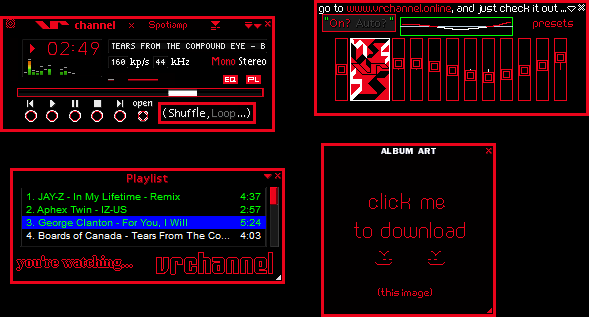

SHOP
GAME
WORKS
ABOUT
IP
welcome to e-paradise ~ ~ ~ ~ ~ ~ ~ ~ ~ ~ ~ ~ ~ ~ ~ ~ ~ ~ ~ ~ ~ ~ watermelon. or like a panda with a mean face. or like sandals with pressure points drawn on them. or the smell of a blackboard eraser. or a sunday morning where you wake up and it's raining. well, i like it more than hard bread. ~ ~ ~ ~ ~ ~ ~ ~ ~ ~ ~ ~ ~ ~ ~ ~ ~ ~ ~ ~ ~ ~ In this world, is the destiny of mankind controlled by some transcendental entity or law? Is it like the hand of God hovering above? At least it is true that man has no control; even over his own will. ~ ~ ~ ~ ~ ~ ~ ~ ~ ~ ~ ~ ~ ~ ~ ~ ~ ~ ~ ~ ~ ~ It's your main man Knuckles, and we in Meteor Herd... You ready to go in space? Help me get the Emeralds... ~ ~ ~ ~ ~ ~ ~ ~ ~ ~ ~ ~ ~ ~ ~ ~ ~ ~ ~ ~ ~ ~ Remote login is a lot like astral projection. ~ ~ ~ ~ ~ ~ ~ ~ ~ ~ ~ ~ ~ ~ ~ ~ ~ ~ ~ ~ ~ ~ Je ne parle pas français mais je pensais que ça aurait l'air cool avec du texte défilant, haha ~ ~ ~ ~ ~ ~ ~ ~ ~ ~ ~ ~ ~ ~ ~ ~ ~ ~ ~ ~ ~ ~ soft sand / tickettotheownzone / woah nelly / game boy player / apples&grapes / NEW MATRIX / heat man stage / Elefun Clockwatcher ~ ~ ~ ~ ~ ~ ~ ~ ~ ~ ~ ~ ~ ~ ~ ~ ~ ~ ~ ~ ~ ~ human experiences, on the net ~ ~ ~ ~ ~ ~ ~ ~ ~ ~ ~ ~ ~ ~ ~ ~ ~ ~ ~ ~ ~ ~ Let's make some magic ~ ~ ~ ~ ~ ~ ~ ~ ~ ~ ~ ~ ~ ~ ~ ~ ~ ~ ~ ~ ~ ~ you're watching. . .
vr channel
Spotiamp skin now available ,':]
hey
